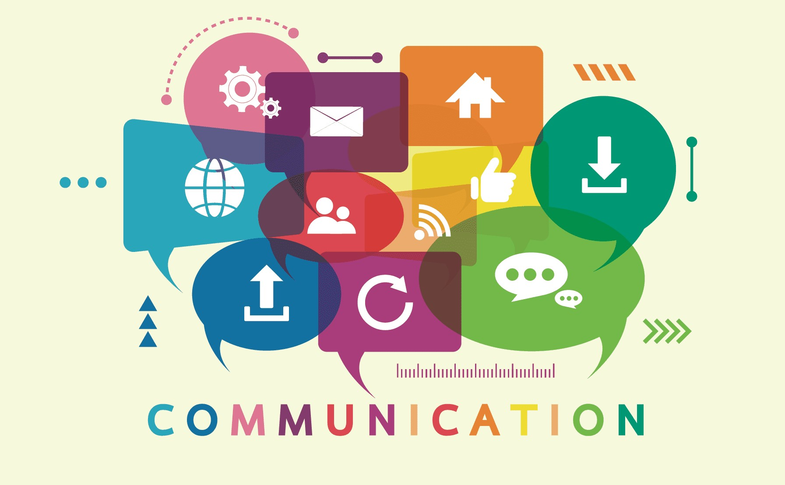

What impact has technology had on people's lives?
Technology has transformed our world and our lives throughout the years. Furthermore, technology has provided incredible tools and resources, allowing us to access essential information at any time.
Multi-functional gadgets such as smartwatches and smartphones have been made possible by modern technology. Computers are becoming more powerful, portable, and quicker than they have ever been.
Technology has made our life simpler, faster, better, and more enjoyable as a result of all of these advancements.
In recent decades, technology has also brought us new products such as PCs, laptops, smartwatches, iPads, voice assistants and internet being the biggest thing.
We can do things like rapidly transfer money and make purchases for everything from apparel to meal delivery, groceries, and furnishings with these gadgets.
Technology has altered the way we entertain ourselves, interact with one another, and consume various forms of information. It's made amusing breakthroughs, but it's also produced significant advancements in home security and medical technology.
Communication has become quick and easy thanks to technological advancements. Looking back, it's amazing to see how much communication has improved over time.
One of the most notable instances of how swiftly technology has progressed is communication tools.
Previously, the best option to connect with someone remotely was to write a letter, send faxes, or find a wired telephone.
Today, you have a plethora of more effective possibilities for connecting with someone in society. You may text them, video chat with them, email them, or phone them.
The way we use our cellphones has also evolved significantly. Aside from social networking sites, there are a plethora of other communication-focused apps.
If you don't want to use social media, WhatsApp and other messaging applications allow you to send messages to friends and family and even make phone calls via Wi-Fi.

You no longer need to go to a bank to withdraw money or send money to someone else.
Many banks have already made internet transactions feasible for consumers all around the world.
PayPal and Venmo, for example, have built online platforms that allow consumers to send and receive money from anywhere.
Due to technological advancements, paying bills has also gotten easier. Rather than remembering to mail a check, you may have payments automatically scheduled when they are due.
You may manage all of your essential bill payments online using your smartphone and a banking app.
Using a banking app to set up automated payments is especially beneficial for seniors with memory issues.
Caregivers or loved ones can assist with setting up recurring bill payments so that there is never any doubt about whether or not a bill will be paid on time.
Paying for stuff using just your smartphone is also simple.
You don't need to carry cash when shopping using Apple Pay or Google Wallet.
These apps connect your bank account and your phone in a safe and secure way.
Mobile payments may now be made using the same equipment that swipe your credit card at the store.
Technology is advancing fast improving productivity and wellbeing for everyone.
We witness significant advancements and developments in technology meant for the greater benefit.
Robots are beginning to function more effectively and human-like than ever before, despite their widespread employment in industries and military.
Robots are being designed with exceptional dexterity, allowing them to move items and themselves more quickly and smoothly.
As time passes more and more new and advanced technology will keep on be developed which benefits us.
Industrial robotics, artificial intelligence, and machine learning are examples of emerging technologies that are rapidly progressing.
These innovations may increase the speed, quality, and cost of goods and services, but they also result in the displacement of vast numbers of employees.
Although it is a good thing, there are also some problems that can airse due to robots replacing humans.
It will surely increase the unemployment rate as many people would get replaced by robots.
One of the most troubling issues associated with the increasing use of technologies is the depletion of natural resources, whether that be rare earth elements/minerals, food sources, or fossil fuels.
Additionally, the world’s hunger for more and more electronics can greatly or completely deplete the world’s resources of gold, coltan, and other rare minerals.
Along with the depletion of resources, one of the most notable negative impacts of technology is the great increase in pollution due to industrialization.
There are several such examples of how technology has altered our lives.
These are only a few examples of how technology is impacting and altering our environment.
Technology has had a tremendous, almost unimaginable impact on human life from the dawn of civilization.
While it is near impossible to gauge the entire impact on human society, technology clearly has done a lot to make human life easier, more enjoyable, and more convenient.
However, when misused or produced irresponsibly, it has had the potential to have devastating consequences, and thus is not without its drawbacks.
As humans venture into the future, it is increasingly important for engineers to operate in a more conscientious and responsible manner, and for end-users to create a balance between the usage of technological systems with old-fashioned techniques for getting things done in a more healthy, productive manner.
Sources:
AgingInPlace OpenMind BBVA Brainspire